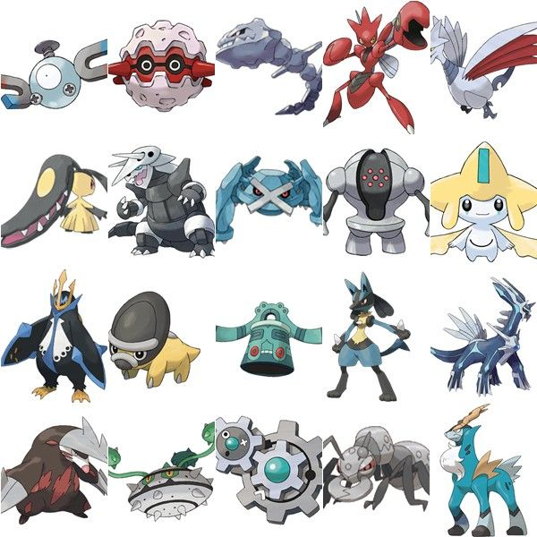
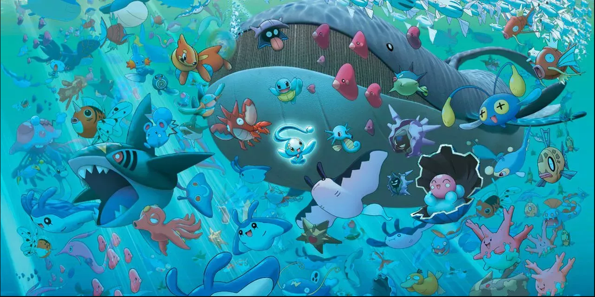

Los tipos de pokémons
Tipos: Acero, Agua, Bicho, Dragón, Eléctrico, Fantasma, Fuego, Hada, Hielo, Lucha, Normal, Planta, Psíquico, Roca, Siniestro, Tierra, Veneno, Volador y ???
Acero
Los de tipo acero son conocidos por su alta defensa, pero también son más lentos. No se envenenan en condiciones normales y no pueden ser dañados por tormentas de arena. Son muy buenos luchadores; los ataques físicos rara vez les hacen mucho daño. Sus debilidades son probablemente la velocidad y la potencia de fuego, los ataques terrestres y cuerpo a cuerpo. Este tipo de Pokémon se encuentra mayoritariamente en cuevas y cavernas, aunque también se pueden encontrar algunos en zonas urbanas como fábricas o centrales eléctricas.
Agua
Se dice que es pura y generalmente adaptable a cualquier situación o clima porque el agua puede tomar cualquier forma en cualquier momento. Como resultado, los Pokémon de tipo agua generalmente se sienten libres siempre que haya agua disponible. La mayoría de estos Pokémon también son de diferentes tipos. Se dice que los Pokémon de tipo agua son muy adaptables y su vitalidad les permite agarrar, bloquear y esquivar bien los ataques. Debido a que viven en el agua, muchos tienen aletas. Los Pokémon de tipo agua son ineficaces y débiles contra los Pokémon de tipo hierba. Sin embargo, muchos tipos de agua también son de tipo hielo o pueden aprender ataques de tipo hielo que son efectivos contra los tipos de hierba y reducen sus barreras. Otro tipo de elemento que amenaza a los Pokémon de tipo agua es el eléctrico, con la excepción de Swamp Thing, que tiene tipos de tierra como elementos secundarios, lo que los hace inmunes.
Bicho
Este grupo de Pokémon se caracteriza por su crecimiento rápido, ya que, en general, no tardan mucho en evolucionar. Muchos de los Pokémon de tipo bicho tienen como tipo secundario volador, lo cual los hace más resistentes a los ataques del tipo planta y tipo lucha, pero los hace más débiles al tipo roca. Este contenido proviene de wikidex.net, y debe darse atribución a sus autores, tal como especifica la licencia.

Dragón
Muchos de los últimos Pokémon legendarios descubiertos son del tipo dragón. Otros Pokémon de este tipo se caracterizan por ser difíciles de atrapar y entrenar. Los movimientos de tipo dragón solo son efectivos contra Pokémon de su propio tipo. Por lo tanto, es, después del tipo normal, el tipo súper efectivo contra menos tipos, no existiendo nunca un Pokémon con doble desventaja a él.

Eléctrico
Tienen hábitats variados, desde bosques y praderas, hasta ciudades y centrales eléctricas. Por consiguiente, los Pokémon eléctricos deben de ser muy precavidos con los ataques de tipo tierra, el cual representa su única debilidad. Pero, cuando un Pokémon de este tipo absorbe demasiada electricidad , puede llegar a ser muy peligroso, debido a que tiene demasiada energía contenida en su interior que no puede ser liberada en poco tiempo, haciéndolos enfermar.

Fantasma
Cuando un Pokémon se encuentra bajo está identidad, será imposible combatir contra ellos, ya que siempre que se ordene un movimiento en su contra, el Pokémon del usuario tendrá demasiado miedo como para usarlo.

Fuego
Los Pokémon de tipo fuego basan sus ataques, principalmente, en el control de este elemento; y la mayoría pueden quemar al Pokémon oponente, mientras que ellos no sufren quemaduras. Sin embargo, los únicos Pokémon que aparentemente suelen andar por lugares verdes como las praderas, son Ponyta y Rapidash, pudiendo ser que estos lugares les permiten galopar sin obstáculos. Muchos de estos Pokémon desprenden llamaradas de sus cuerpos, lo cual, aparentemente, no les incomoda; y, dependiendo de su estado de ánimo, puede que estas llamas se aviven o disminuyan.

Hada
Fue introducido para equilibrar el poder superior de los Pokémon de tipo dragón, tal como se hizo en la segunda generación con los tipos acero y siniestro. Por lo general, son Pokémon con un nivel alto de defensa especial, como Sylveon, Mr. Al contrario de los Pokémon de tipo psíquico, que usan sus ataques con el poder de su mente, estos usan poderes sobrenaturales y místicos. La mayoría de los Pokémon de este tipo son de aspecto tierno y suave, pero a la vez son muy poderosos.

Hielo
Destacan por su gran resistencia y adaptación al medio frío o glaciar, como son las cimas de las montañas, las cavernas y cuevas heladas, o incluso los polos. Además, pueden realizar ataques devastadores, como frío polar, al cual son inmunes. Muchos Pokémon de este tipo representan seres vivos que se encuentran en regiones y paisajes helados, como lo son: osos polares, focas, leones marinos y morsas.

Lucha
Este tipo de Pokémon son especialistas en el combate cuerpo a cuerpo, se podría decir que son opuestos a los del tipo psíquico, ya que, estos últimos, dependen del ataque especial; mientras que los del tipo lucha se especializan en ataque físico. Su desarrollo varía: de veloz desarrollo como Monferno a Infernape; o tardíos en su desarrollo como Croagunk a Toxicroak. El hecho de que varios Pokémon de tipo lucha evolucionen de métodos especiales, hacen referencia a los viajes internos que realizan los luchadores en busca de conocimiento para triunfar o de la paz interior.

Normal
El tipo normal abarca la mayor cantidad y variedad de movimientos que el resto de tipos. Gran parte de estos son movimientos que no realizan daño o no lo hacen directamente, sino que afectan a las características o estados del Pokémon. El tipo normal es el tipo que posee menos debilidades, solo una, la cual es el tipo lucha, pero, al mismo tiempo, es el tipo con menos fortalezas, ya que no es efectivo contra ningún tipo elemental de Pokémon.

Planta
A los Pokémon de tipo planta les gusta cuidar de las flores y a los demás, pero también son grandes luchadores y son expertos en cambios de estado, pudiendo envenenar, paralizar o dormir al rival en combate, mientras que ellos son inmunes a drenadoras, y a movimientos con esporas y polvos. Estos Pokémon suelen desarrollar hojas, flores, entre otros que tienen un crecimiento propio, pero que son controladas por el Pokémon. Este contenido proviene de wikidex.net, y debe darse atribución a sus autores, tal como especifica la licencia.

Psítico
Los Pokémon de este tipo suelen ser muy inteligentes y, a menudo, se les atribuye capacidades como prever acciones futuras, hacer levitar objetos o incluso a ellos mismos. Se puede localizar a este tipo de Pokémon en cuevas o zonas cercanas a estas.

Roca
El tipo roca destaca por su gran defensa frente a ataques físicos. Cabe destacar que, la mayoría de los movimientos de tipo roca , poseen baja precisión a la hora de atacar. Los Pokémon de tipo roca no reciben daño por tormentas de arena y, a partir de la cuarta generación, su defensa especial aumenta en un 50% durante la tormenta. Así que, gracias a este método de conservación, los Pokémon revividos poseen algunas combinaciones de tipos únicas, que no pueden ser halladas en ningún Pokémon moderno, como roca/planta o roca/hielo.

Siniestro
Como bien indica su nombre, representan la oscuridad y la maldad, asimismo, puede simplemente tratarse de criaturas más acostumbradas a la noche que al día. Los tipo siniestro, generalmente, están basados en animales de la vida real que, por lo normal, resultan intimidantes y aterradores, como lo son: lobos, pirañas, tiburones, escorpiones, cocodrilos y hasta grandes felinos. En Pokémon Diamante, Perla y Platino; el Equipo Galaxia usa a Stunky, Weavile y Honchkrow.

Tierra
Estos Pokémon se pueden hallar en cuevas o zonas rocosas, con excepción de algunos de doble tipo. Groudon, Landorus, y Zygarde son los únicos Pokémon legendarios de este tipo. Los Pokémon de tipo tierra destacan por ser inmunes ante ataques tipo eléctrico y no reciben daño por tormentas de arena.

Veneno
Muchos Pokémon de este tipo pueden expulsar de sus cuerpos distintas sustancias nocivas como gases, ácidos, venenos, esporas u olores malolientes. También, los Pokémon del tipo veneno están basados en seres vivientes que son, generalmente, venenosos. Un Pokémon de tipo veneno no puede ser envenenado . Y un Pokémon de tipo veneno que no sea de tipo volador ni tenga la habilidad levitación, anula el efecto de púas tóxicas de modo que, ningún Pokémon resultará envenenado al entrar al campo de combate.

Volador
Los Pokémon de tipo volador son rápidos y con ataques que normalmente son de contacto físico, o en los que utilizan el viento a su favor. Tampoco pueden ser envenenados al entrar a un campo de combate con púas tóxicas ni recibir daño de púas. Los Pokémon de tipo hielo pueden congelar sus alas con la misma consecuencia final que los Pokémon eléctricos.